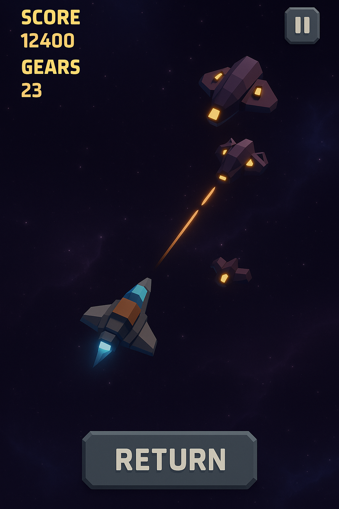

Stellar Drift
Genre: Space survival
Platforms: Mobile (iOS and Android)
Stellar Drift is a multiplayer space survival game where you drift through the galaxy, fight enemies, encounter real players, and risk everything.
Play actively to collect more gears and score, or stay AFK and drift – but beware: enemies are everywhere, and death means losing everything.
Return safely to upgrade your ship’s speed, damage, or defense, and climb the leaderboards.
Stellar Drift is in early development. Estimated release mid 2027.